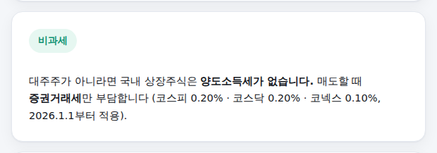
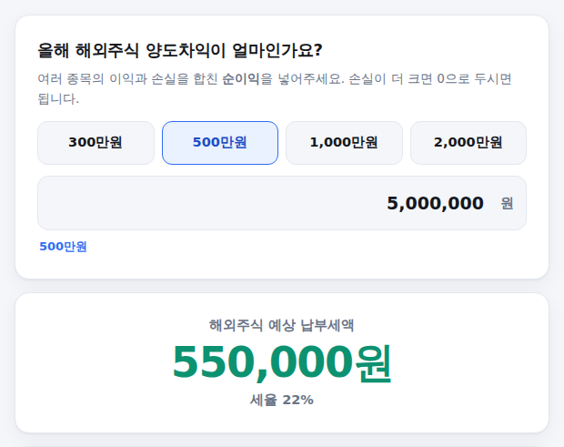

국내 주식은 세금이 없는 줄 알았는데 대주주라 세금이 붙는 경우도 있고, 해외주식은 22%나 뗀다는데 정확히 얼마인지는 헷갈리기 마련입니다. 국내·해외를 먼저 고르면 그에 맞는 항목만 물어보고 바로 계산해주는 계산기를 만들었습니다. 쓰는 법은 아래와 같습니다.
-
국내·해외 중 계산할 시장 선택
화면 맨 위 "국내 상장주식" / "해외주식" 탭을 눌러 어느 쪽을 계산할지 먼저 고릅니다. 기본값은 국내 상장주식입니다.
국내 탭을 고르면 바로 "대주주이신가요?"라는 질문이 나옵니다. 대주주는 종목당 시가 50억원 이상이거나 지분율이 코스피 1%·코스닥 2%·코넥스 4% 이상인 경우인데, 대부분의 개인 투자자는 해당하지 않습니다.
시장 선택 및 대주주 질문 화면
-
대주주가 아니라면 → 비과세로 끝
"아니오"를 선택하면(기본값) 그걸로 끝입니다. 국내 상장주식을 코스피·코스닥·코넥스 정규시장에서 거래하는 소액주주는 양도소득세 자체가 없습니다. 매도할 때 증권거래세만 부담하는데, 이 세율도 화면에 함께 표시됩니다.

비과세 결과 화면
-
대주주라면 → 추가 정보 3개 입력
"예"를 선택하면 그때부터 세 가지를 더 물어봅니다.
- 중소기업 여부 — 중소기업 주식은 세율이 11%로 훨씬 낮습니다.
- 1년 이상 보유 여부 — 중소기업이 아닌 주식을 1년 미만 보유하고 팔면 세율이 33%로 뛰어요.
- 양도차익 — 여러 종목의 이익과 손실을 합친 순이익을 넣습니다.
입력하는 즉시 아래에 기본공제 250만원을 뺀 과세표준과 세율, 최종 납부세액이 바로 계산돼서 나타납니다.
대주주 추가 입력 및 결과 화면
-
해외주식은 순이익 하나만 입력
"해외주식" 탭으로 넘어가면 훨씬 간단합니다. 여러 종목의 이익과 손실을 합친 순이익 하나만 넣으면 됩니다. 300만/500만/1,000만/2,000만원 버튼을 눌러 대략 맞춰도 되고 직접 입력해도 됩니다.
해외주식은 국내 대주주와 달리 금액 구간 없이 기본공제 250만원을 넘는 부분에 22% 단일세율이 그대로 적용됩니다.

해외주식 입력 및 결과 화면
국내·해외 양쪽에 모두 해당된다면
기본공제 250만원은 법적으로 국내 대주주분과 해외주식분을 합쳐서 연 1회만 적용됩니다. 이 계산기는 두 시장을 각각 독립적으로 계산하기 때문에, 두 시장 모두에 순이익이 있으신 경우 두 결과를 그대로 더하면 공제가 두 번 반영되어 실제보다 적게 나옵니다. 이런 드문 경우에는 계산기 결과를 참고만 하시고, 정확한 합산 신고는 국세청 홈택스나 세무사를 통해 확인하시길 권합니다.
계산은 참고용이며 투자·세무 조언이 아닙니다. 대주주 특수관계인 합산 등 세부 예외 규정은 반영하지 않았습니다. 세율 기준: 2026.09 소득세법·조세금융신문 등 공개 자료 교차검증. 금융투자소득세(금투세)는 2024.12 폐지되어 반영하지 않았습니다.